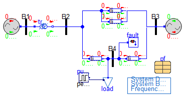
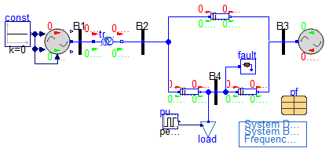

Test models for plant models
Information
Extends from Modelica.Icons.ExamplesPackage (Icon for packages containing runnable examples).
Package Content
| Name |
Description |
 testGen testGen
|
|
| testGenIO
|
|

Information
Extends from Modelica.Icons.Example (Icon for runnable examples), Example1.Base.Networks.BasePFnFault (Partial SMIB Model with power flow data and a fault component).
Modelica definition
model testGen
extends Modelica.Icons.Example;
extends Example1.Base.Networks.BasePFnFault(
fault(t1=Modelica.Constants.inf, t2=Modelica.Constants.inf),
pf(
redeclare record Bus =
Example1.PFData.Data.BusData.PF_Bus_10,
redeclare record Loads =
Example1.PFData.Data.LoadData.PF_Loads_10,
redeclare record Trafos =
Example1.PFData.Data.TrafoData.PF_Trafos_10,
redeclare record Machines =
Example1.PFData.Data.MachineData.PF_Machines_10),
line_1(X=3.25));
Modelica.Blocks.Sources.Pulse pulse(
amplitude=0.01,
width=50,
period=0.1,
nperiod=1,
startTime=5);
Gen gen(
P_0=pf.machines.PG1,
Q_0=pf.machines.PG1,
v_0=pf.bus.V1,
angle_0=pf.bus.A1,
Kw=12.6924,
Tw=0.5602);
OpenIPSL.Electrical.Branches.PwLine line_4(
R=Modelica.Constants.eps,
G=Modelica.Constants.eps,
B=Modelica.Constants.eps,
X=3.25/5.5,
t1=Modelica.Constants.inf,
t2=Modelica.Constants.inf,
opening=1);
equation
connect(pulse.y, load.u);
connect(gen.pwPin, B1.p);
connect(line_4.p, line_1.p);
connect(line_4.n, B3.p);
end testGen;

Information
Extends from Modelica.Icons.Example (Icon for runnable examples), Example1.Base.Networks.BasePFnFault (Partial SMIB Model with power flow data and a fault component).
Modelica definition
model testGenIO
extends Modelica.Icons.Example;
extends Example1.Base.Networks.BasePFnFault(fault(t1=Modelica.Constants.inf,
t2=Modelica.Constants.inf), pf(
redeclare record Bus =
Example1.PFData.Data.BusData.PF_Bus_10,
redeclare record Loads =
Example1.PFData.Data.LoadData.PF_Loads_10,
redeclare record Trafos =
Example1.PFData.Data.TrafoData.PF_Trafos_10,
redeclare record Machines =
Example1.PFData.Data.MachineData.PF_Machines_10));
Modelica.Blocks.Sources.Pulse pulse(
amplitude=0.01,
width=50,
period=0.1,
nperiod=1,
startTime=5);
GenIO gen(
P_0=pf.machines.PG1,
Q_0=pf.machines.PG1,
v_0=pf.bus.V1,
angle_0=pf.bus.A1,
Kw=0,
Tw=0);
Modelica.Blocks.Sources.Constant const(k=0);
equation
connect(pulse.y, load.u);
connect(gen.pwPin, B1.p);
connect(const.y, gen.uPSS);
connect(gen.upm, const.y);
connect(gen.uvsAVR, const.y);
end testGenIO;
Automatically generated Fri Mar 8 12:46:03 2024.
 Example1.Base.Plants.Tests.testGen
Example1.Base.Plants.Tests.testGen